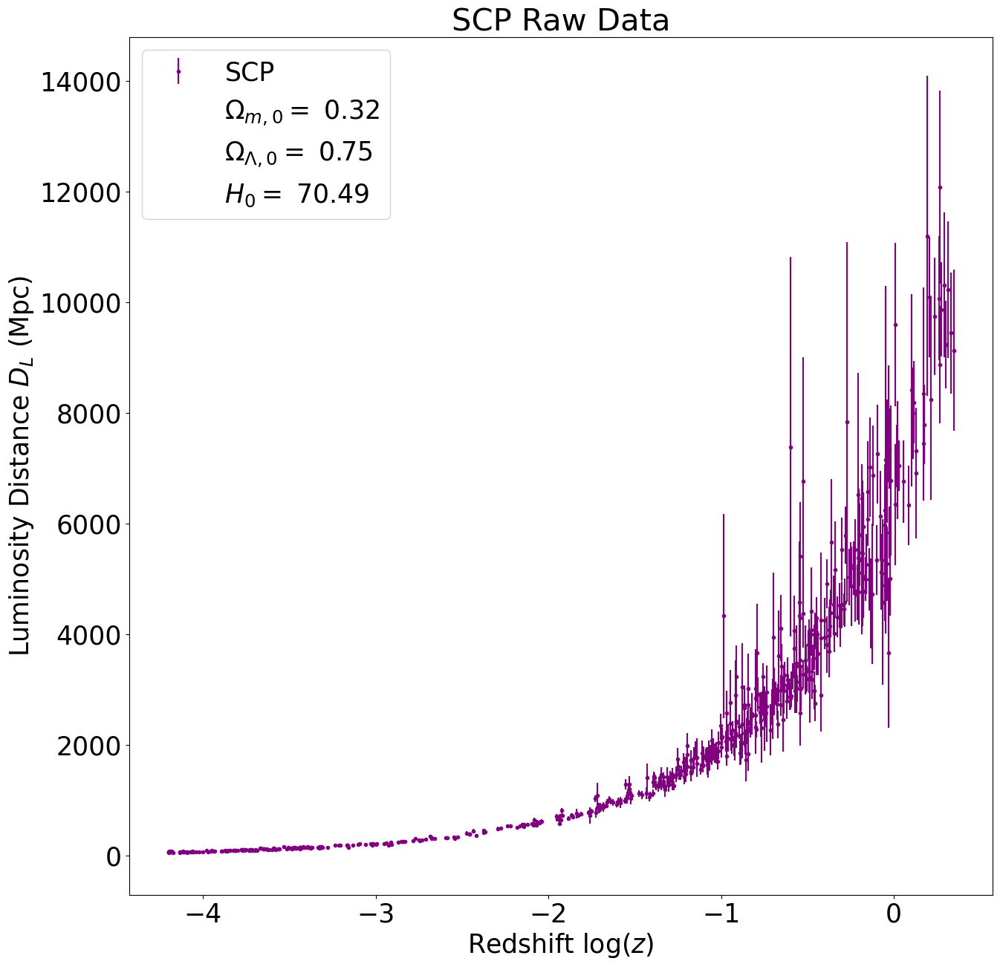
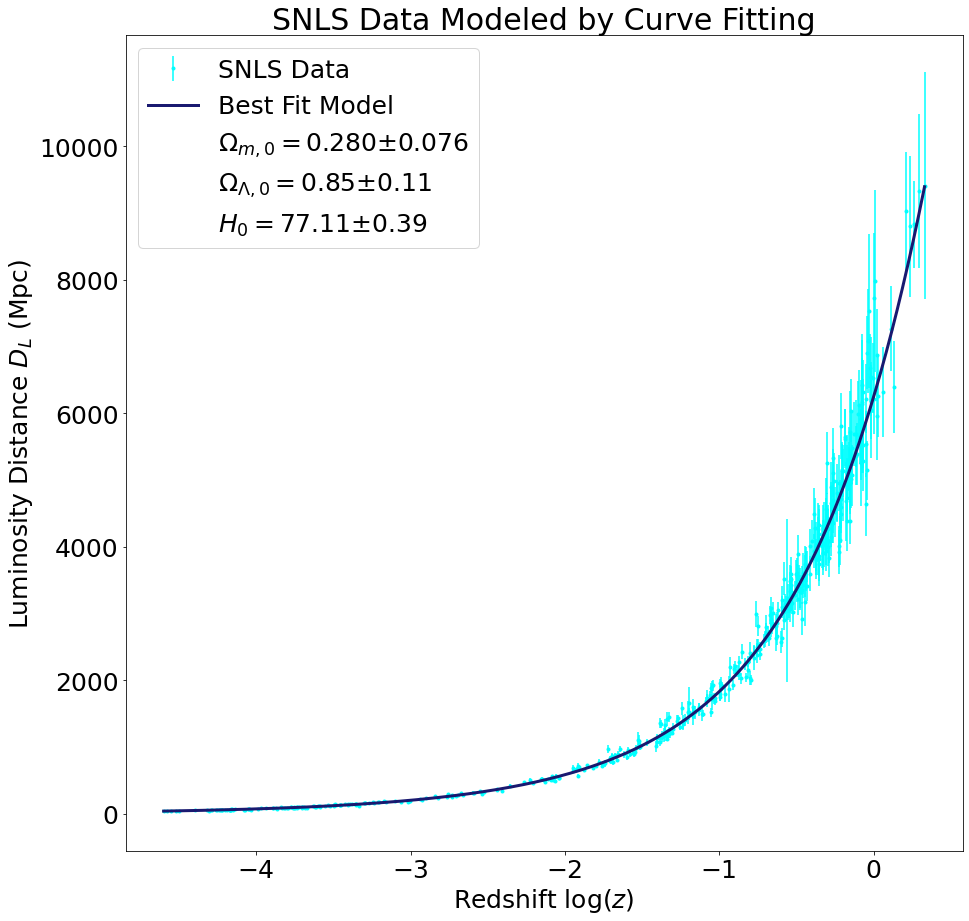
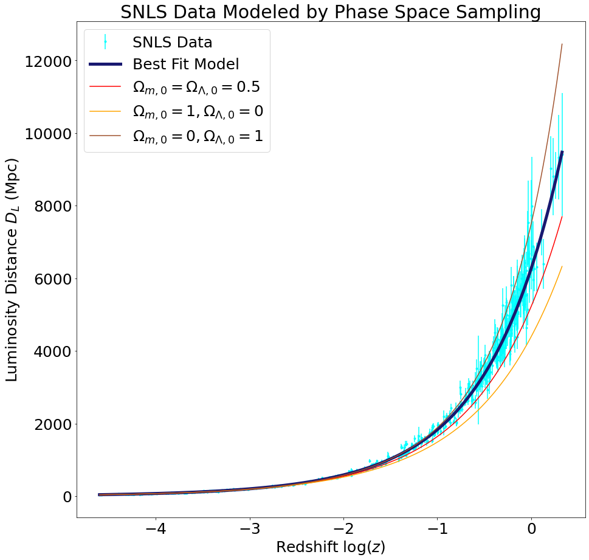

Background
In 1917, Albert Einstein published his paper describing the general theory of relativity. However, in this paper, Einstein assumed a static universe (\(\omega = 1 \)). Just over ten years later, Hubble published an article in 1929 where he presented empirical evidence that we instead live in an expanding universe. By observing the redshift of distant galaxies, Hubble derived his famous equation:
\[v = H_0 D \]
Known as Hubble’s Law, this equation states galaxies are moving farther away at a speed proportional to their distances. If we examine Hubble’s data explicitly:

From his infamous formula, his data gives a Hubble constant \(H_0 \approx 450 \). Despite applying the correct equation, Hubble incorrectly derived his own constant because he did not look far enough away. Supplied with more sensitive instruments, scientists can derive much more accurate values for Hubble’s constant and cosmological parameters. For further information, refer to the theory page for further information on how we derived our values.
Data
For our data, we choose to work with three different Type 1a supernova surveys: SCP, Pantheon and SNLS. The plot below contains all of the raw data for redshift and luminosity distances. To display the improvements in the astronomical observation, we included Hubble’s initial data from his 1929 paper.

Going forward, we will be comparing the results of these three data sets. We will not be calculating cosmological parameters from Hubble’s data as there is not enough information to produce accurate phase space maps. Here are the three raw data sets plotted next to each other.


Results from Phase Space Sampling
We fit the supernova luminosity distance versus redshift data to the model described on our Theory page in two different ways: first using the SciPy curve_fit function, and second by sampling the \((\Omega_{m,0},\Omega_{\Lambda,0})\) phase space. We obtained very similar results with the two methods, and they both provide a good fit to the data, as illustrated in the luminosity distance versus redshift plots below.


...


...
...
...
Discussion
In summary, we have calculated the best-fit values of \(\Omega_{m,0}\), \(\Omega_{\Lambda,0}\), and \(H_0\) in two ways: directly fitting a model to the data and sampling the phase space. Using the best-fit values of the cosmological parameters, we integrated the Friedmann equation to find the scale factor as a function of time. Our values of the cosmological parameters, along with the accepted values from the Benchmark Model, are summarized in the table below.
| Source |
Method |
\(\Omega_{m,0}\) |
\(\Omega_{\Lambda,0}\) |
\(H_0 (\text{km}/\text{s}/\text{Mpc})\) |
| SCP |
Curve Fit
Phase Space |
\(0.323 \pm 0.069\)
\(0.32\) |
\(0.75 \pm 0.11\)
\(0.75\) |
| \(70.49 \pm 0.43\)
\(70.49\) |
| Pantheon |
Curve Fit
Phase Space |
|
|
|
| SNLS |
Curve Fit
Phase Space |
|
|
|
| Benchmark Model |
Ryden :) |
\(.30\) |
\(.70\) |
\(70\) |
Our results are close to those of the Benchmark Model, but we estimate that the dark matter density is larger than the benchmark value by about \(5\%\) and that the matter density is larger than the benchmark value by about \(2\%\). In particular, while the Benchmark Model assumes a flat universe, our estimated parameters suggest \(\Omega_0 = \Omega_{m,0} + \Omega_{\Lambda,0} > 1\), which corresponds to a positively curved universe. However, these discrepancies can easily be explained by the error bars on the measurements, seeing as the error bars on \(\Omega_{m,0}\) and \(\Omega_{\Lambda,0}\) in the direct fit approach were around \(0.07\) and \(0.1\), respectively. (We did not cite exact error bars for the other two sources because the phase space sampling method did not provide error bars and Ryden does not list error bars for the Benchmark Model, but we anticipate the errors on the phase space sampling method would be similar to those on the direct fit method.) Interestingly, the Hubble constant we calculated, \(H_0 = 70.49\pm0.43\text{ km/s/Mpc}\), falls in between the values obtained using CMB and more recent supernovae data
At first this result might seem surprising because our calculation was also based on supernovae, but our \(H_0\) value is not implausible because measurements of the Hubble constant have changed over time and as observational techniques improve.
Next Steps:
If we had unlimited time to complete this project (and did not have finals to study for), we would have liked to have a feature on the website that allowed users to import their values for the cosmological parameters and a scale factor plot would generate. The feature is technically available in our jupyer notebooks (linked on our github, see about page) but we did not have enought time to make this part of our website.